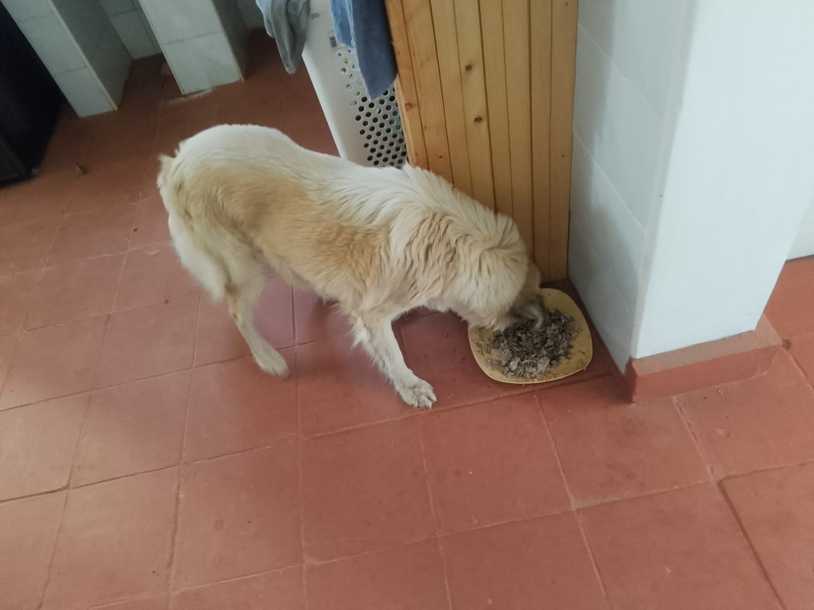

Mucheru World of Golf
Field engineering operations across Mucheru World of Golf on Monday, 26th October 2026 achieved significant advances in irrigation automation, teebox lateral pipe trenching, turfgrass deliveries, and reservoir management:
Golf Course Operational Highlights
Irrigation automation advanced with electric solenoid valves installed across Greens 1, 3, 4, 8, and Teebox 3, alongside pop-up rotor sprinkler pre-assembly. Labor crews excavated lateral pipe trenches across all teebox platforms, hauled river sand to Green 13, and received a fresh consignment of Kikuyu grass sods. Red soil was applied on Teeboxes 16, 8, and 6, while drainage leveling, reservoir inflow, and perimeter hedge weeding continued.
- Electric Solenoid Valves Installed Across 5 Locations: Solenoids fitted on lateral lines for Greens 1, 3, 4, 8, and Teebox 3, establishing automated zone irrigation control.
- Hunter Pop-Up Sprinkler Pre-Assembly: Technicians assembled pop-up rotor sprinklers, fitting nozzles and couplings before pipe connections.
- Course-Wide Teebox Lateral Trench Excavation: Crews excavated lateral trenches across all course teeboxes along marked survey lines for pipe and sprinkler placement.
- Fresh Kikuyu Grass Turfgrass Delivery: A commercial Mitsubishi FH lorry arrived on site carrying a full consignment of fresh Kikuyu grass sods, staged for corridor planting.
- River Sand Haulage from Green 3 to Green 13: The farm tractor hauled clean river sand from Green 3 to Green 13 to build the rootzone layer over pumice.
- Red Topsoil Applied on Teeboxes 16, 8 & 6: Ground crews spread red soil on Teeboxes 16, 8, and 6 to build elevations, with Teebox 6 soil spreading actively ongoing.
- Canal Leveling, Dam Operations & Site Visits: Drainage leveling continued at Green 9 and the main canal; Dam 3 inlet flowed while Dam 1 pump stalled; Kevin Njoroge, contractor Macharia, Gachagua, and the Engineer inspected works; and hedge seedlings were weeded.
18-hole putting green status audit showing the latest work completed and current condition for each green as of October 26, 2026:
| Green | Current Technical & Agronomic State | Milestone Status |
|---|---|---|
| Green 1 Today | Electric solenoid valve installed and fitted on lateral line in perimeter trench (Oct 26). | Solenoid Installed |
| Green 2 | Pop-up sprinklers installed on lateral line and operational spray coverage verified (Oct 25). | Sprinklers Installed |
| Green 3 Today | Electric solenoid valve installed on lateral line; river sand hauled to Green 13 (Oct 26). | Solenoid Installed |
| Green 4 Today | Electric solenoid valve installed and connected on lateral line in perimeter trench (Oct 26). | Solenoid Installed |
| Green 5 | Established mature championship putting green turfgrass watered with pop-up sprinklers (Oct 24). | Turf Irrigated |
| Green 6 | Drainage flow issues identified; slope measurements taken for upcoming replacement trench (Oct 24). | New Trench Measured |
| Green 7 | Drainage outlet trench connecting green 7 to main canal dug and leveled by manual crew (Oct 15). | Outlet Trench Dug • Leveled |
| Green 8 Today | Electric solenoid valve installation and lateral pipe fitting completed on green (Oct 26). | Solenoid Installed |
| Green 9 Today | Drainage trench excavation and leveling for gravity waterflow actively ongoing (Oct 26). | Drainage Levelling |
| Green 10 | Pop-up sprinkler trenches digging completed around collar and surrounds (Oct 15). | Sprinkler Trenches Complete |
| Green 11 | Pop-up sprinklers installed on lateral line and operational spray coverage verified (Oct 25). | Sprinklers Installed |
| Green 12 | Pop-up sprinklers installed; clean river sand spread and leveled across foundation (Oct 25). | Sprinklers & Riversand |
| Green 13 Today | Clean river sand hauled from Green 3 and received for foundation rootzone layering (Oct 26). | River Sand Received |
| Green 14 | Saddle clamps installed on HDPE pop-up sprinkler pipes and perimeter trenches backfilled (Oct 23). | Saddle Clamps & Covered |
| Green 15 | Saddle clamps installed on HDPE pop-up sprinkler pipes and perimeter trenches backfilled (Oct 22). | Saddle Clamps & Covered |
| Green 16 | Electric solenoid valve installed on lateral line; HDPE sprinkler trenches backfilled (Oct 24). | Solenoid Installed |
| Green 17 | Electric solenoid valve installed on lateral line; HDPE sprinkler trenches backfilled (Oct 24). | Solenoid Installed |
| Green 18 | One tipper lorry of river sand delivered; pop-up sprinklers installed and operational (Oct 25). | Sand & Sprinklers |
18-hole championship teebox status audit tracking launch platform shaping, red soil leveling, and irrigation pipe installations as of October 26, 2026:
| Teebox | Current Technical & Earthwork State | Platform Status |
|---|---|---|
| Tee 1 Today | Irrigation pipe trenches excavated across platform along marked survey lines (Oct 26). | Pipe Trenches Dug |
| Tee 2 Today | Irrigation pipe trenches excavated across platform along marked survey lines (Oct 26). | Pipe Trenches Dug |
| Tee 3 Today | Electric solenoid valve installed; lateral irrigation trenches excavated on platform (Oct 26). | Solenoid & Trenches Dug |
| Tee 4 Today | Irrigation pipe trenches excavated across platform along marked survey lines (Oct 26). | Pipe Trenches Dug |
| Tee 5 Today | Irrigation pipe trenches excavated across platform along marked survey lines (Oct 26). | Pipe Trenches Dug |
| Tee 6 Today | Red soil application actively underway across platform (ongoing / not complete) (Oct 26). | Red Soil Ongoing |
| Tee 7 Today | Irrigation pipe trenches excavated across platform along marked survey lines (Oct 26). | Pipe Trenches Dug |
| Tee 8 Today | Red soil applied across platform; lateral irrigation pipe trenches excavated (Oct 26). | Red Soil & Trenches Dug |
| Tee 9 Today | Irrigation pipe trenches excavated across platform along marked survey lines (Oct 26). | Pipe Trenches Dug |
| Tee 10 Today | Irrigation pipe trenches excavated across platform along marked survey lines (Oct 26). | Pipe Trenches Dug |
| Tee 11 Today | Irrigation pipe trenches excavated across platform along marked survey lines (Oct 26). | Pipe Trenches Dug |
| Tee 12 Today | Irrigation pipe trenches excavated across platform along marked survey lines (Oct 26). | Pipe Trenches Dug |
| Tee 13 Today | Irrigation pipe trenches excavated across platform along marked survey lines (Oct 26). | Pipe Trenches Dug |
| Tee 14 Today | Irrigation pipe trenches excavated across platform along marked survey lines (Oct 26). | Pipe Trenches Dug |
| Tee 15 Today | Irrigation pipe trenches excavated across platform along marked survey lines (Oct 26). | Pipe Trenches Dug |
| Tee 16 Today | Red soil applied, spread, and leveled; lateral irrigation pipe trenches excavated (Oct 26). | Red Soil & Trenches Dug |
| Tee 17 Today | Irrigation pipe trenches excavated across platform along marked survey lines (Oct 26). | Pipe Trenches Dug |
| Tee 18 Today | Irrigation pipe trenches excavated across platform along marked survey lines (Oct 26). | Pipe Trenches Dug |
Operations Agronomy & Engineering Synthesis
Course Agronomy & Earthwork Milestones: Fresh Kikuyu grass sods delivered via Mitsubishi FH truck; clean river sand hauled by tractor from Green 3 to Green 13; red topsoil applied on Teeboxes 16, 8, and 6 (Teebox 6 ongoing); drainage canal base leveling continuing at Green 9 and main canal.
Hydraulic & Irrigation Infrastructure: Electric solenoid valves installed across Greens 1, 3, 4, 8, and Teebox 3; Hunter pop-up sprinklers assembled and fitted with nozzles; lateral pipe trenches excavated across all teeboxes along surveyed lines; Dam 3 water inlet inflow ongoing; Dam 1 pump replacement failed.
Field video recording documenting Monday, 26th October 2026 operations at Mucheru World of Golf, showcasing irrigation solenoid installation, pop-up sprinkler prep, teebox lateral trenching, Kikuyu grass delivery, river sand haulage, drainage leveling, and reservoir operations:
Comprehensive field video capturing Monday, 26th October 2026 operations at Mucheru World of Golf: electric solenoid valve fitting on greens and teeboxes, assembling Hunter pop-up sprinklers, lateral trench excavation across teeboxes along marked survey lines, delivery of Kikuyu grass sods, tractor haulage of river sand from Green 3 to 13, drainage leveling at Green 9 and the main canal, technical review by Kevin Njoroge, contractor Macharia, Gachagua, and the Engineer, and Dam 3 water inlet inflow.
Sequential photographic field documentation showing solenoid installations, pop-up sprinkler preparations, teebox lateral pipe trenches, drainage canal leveling, Kikuyu grass deliveries, river sand haulage, teebox earthworks, technical surveys, and reservoir operations:

Electric Solenoid Valve Installation — Lateral Line
Plumbing crew in gumboots securing and solvent-welding an electric solenoid valve assembly onto the black HDPE lateral irrigation pipe in the trench running alongside the course boundary fence.

Completed Solenoid Manifold Setup & Trench Backfill
Finished installation of an electric solenoid control valve manifold elevated neatly above ground level, with the lateral feeder trench backfilled and smoothed along the boundary fence.

Hunter Pop-Up Sprinkler Pre-Assembly
Two irrigation technicians seated on site unboxing genuine Hunter pop-up rotor sprinklers from manufacturer cartons, fitting nozzles and threaded couplings prior to lateral pipe integration.

Teebox Lateral Trench Excavation — Alignment Route
Manual labor crew excavating a uniform straight trench through the red topsoil of the teebox platform, adhering precisely to the white powder alignment lines marked for lateral sprinkler pipes.

Aerial Perspective — Excavated Teebox Sprinkler Trench
High-angle drone photograph capturing a newly excavated lateral pipe trench running directly through the center of a shaped red topsoil teebox platform towards the adjoining fairway.

Green 9 Drainage Trench — Gravity Invert Grading
Trenching laborers utilizing pickaxes and flat shovels to dig, shape, and level the base invert of the drainage canal alongside Green 9 to ensure positive gravity water discharge.

Drone View — Green 9 Drainage Trench & PVC Pipeline
Aerial overview showing the linear drainage trench running alongside Green 9's sand rootzone and red soil collar, with brown PVC drainage pipes staged on the trench bank.

Main Drainage Canal — Invert Shaping & Soil Clearance
Labor crew working inside the deep main drainage canal trench, carefully shaping earthen embankments and clearing loose subsoil to establish continuous slope gradient for gravity flow.

Aerial Overview — Main Course Drainage Canal Trench
Drone perspective displaying the expansive, winding trajectory of the main course drainage trench cutting across the fairway terrain, with three workers actively grading the trench floor.

Kikuyu Grass Turf Intake — Mitsubishi FH Delivery
Commercial Mitsubishi FH truck delivering a fresh bulk consignment of vigorous Kikuyu grass sods and stolons to the golf course, with workers inspecting the offload.

Kikuyu Grass Sods Manual Offloading & Staging
On-site laborers working at the rear of the delivery truck to manually offload healthy green Kikuyu turf rolls and spread them across designated nursery and corridor staging zones.

Delivered Kikuyu Turfgrass Detail — Fresh Sod Matrix
Interior view of the truck cargo bed showing the fresh, thick root and blade matrix of delivered Kikuyu grass turf, ready for immediate planting and establishing fairway ground cover.

Staged Kikuyu Grass Sods on Prepared Course Grounds
Freshly delivered Kikuyu grass sods arranged and laid out across the soil bed adjacent to native trees, ready for systematic planting and irrigation across course playing surfaces.

Rootzone Sand Logistics — Farm Tractor Haulage
Heavy farm tractor with red tipping trailer (ZJ 5334) fully loaded with clean, washed river sand transporting the material from the Green 3 stockpile to Green 13 for rootzone construction.

Teebox 16 — Platform Red Topsoil Application
Ground crew using wheelbarrows and shovels to haul, distribute, and grade rich red topsoil across the elevated playing terrace of Teebox 16, with white alignment powder lines visible.

Championship Teebox — Red Soil Spreading & Contouring
Laborers moving and spreading mounds of fertile red loam soil across the rough-graded teebox platform bed, establishing uniform sub-base depth and proper playing terrace elevation.

Technical Field Oversight — Kevin Njoroge on Site
Kevin Njoroge standing on the golf course grounds during the morning inspection holding project documentation and digital plans to evaluate ongoing civil earthworks.

Course Surveying & Inspection — Technical Team
Kevin Njoroge and contractor Macharia in the distance conducting on-site distance and elevation measurements across the playing corridor, joined later by Gachagua and the Engineer.

Dam 1 Basin — Water Pump Inspection After Breakdown
Technician inspecting the replacement water pump inside the polythene-lined basin of Dam 1, where water evacuation into Dam 2 was paused following another mechanical pump failure.

Dam 1 Reservoir Aerial Status — Lined Basin & Canal
Drone aerial view of Dam 1 showing the black geomembrane-lined reservoir holding remaining water volume, with the pump installation point and perimeter drainage canal visible.

Dam 2 Reservoir Aerial Overview — Central Island
Overhead drone photograph of Dam 2 showcasing the lined retention basin with its preserved natural central vegetation island and adjoining red soil leveled platform.

Dam 3 Reservoir Replenishment — Water Inflow Progression
Ground-level view of Dam 3 filled with clean green-tinted water over its black geomembrane liner, documenting active continuous water replenishment through the inlet channel.

Dam 3 Canal Aerial Perspective — Substantial Retention
Spectacular high-altitude drone capture of Dam 3's elongated water storage basin filled with substantial water volume, flanked by shaped course features and native acacia trees.

Perimeter Boundary Maintenance — Hedge Weeding & Drip Line
Neatly weeded and cultivated soil strip along the boundary chain-link and post fence, maintaining newly planted perimeter hedge seedlings and surface drip irrigation tubing.

Perimeter Hedge Seedling Care — Women Landscaping Crew
Women landscaping crew manually weeding, clearing invasive grass, and grooming soil berms around perimeter hedge seedlings and young palm trees along the estate boundary line.

Teebox Platform Aerial — Lateral Sprinkler Trench
Drone aerial capture of an elevated red soil teebox platform bordered by wire fence and trees, showing a clean straight lateral irrigation trench excavated across the terrace.

Championship Teebox Aerial — Trenching & Platform Shaping
Aerial drone view documenting the precise execution of lateral pipe trenching across a leveled red loam teebox platform, ready for pipe insertion and sprinkler fitting.

Course Teebox Layout — Centerline Pipe Trench Progression
High-resolution drone image showing a centerline lateral trench excavated across the red soil surface of a championship teebox alongside an access track and boundary line.

Elevated Teebox Perspective — Irrigation Network Trenching
Overhead aerial photograph showing lateral irrigation trenching across a raised teebox playing surface, demonstrating course-wide progress toward automated sprinkler coverage.

Panoramic Course Aerial — Teebox Platforms & Adjacent Greens
Wide-angle drone overview capturing a teebox platform with excavated lateral trenches in the foreground, adjacent putting greens with sand rootzones, and surrounding fairways.
Chaka Farms
Operations across Chaka Farms on Monday, 26th October 2026 maintained balanced dairy production, landscape rockery construction, veterinary care, and grounds upkeep under coordinated supervision:
Farm Operational Highlights
Dairy operations achieved 9.0 Litres gross harvest (5.5L morning + 3.5L evening), with 8.0 Litres dispatched for commercial sales (3.5L morning + 4.5L evening) and 1.0 Litre distributed for routine internal farm allocations (0.5L Gladys + 0.5L Maasai), achieving 100% quantitative accounting reconciliation strictly in Litres with zero discrepancy. Ken supervised hands-on stone arrangement for the stepped rock garden on the office lawn. Willy directed canine unit operations, including administering Alfanil Plus deworming tablets to all dogs except Mali, morning kennel cleaning, paw command training, off-leash walking, socialization sessions for Coby, Mali, and Zara, and reinforced kennel manners. Margaret and Monica maintained compound cleanliness, manually uprooting weeds and grass along road verges.
- 100% Reconciled Dairy Harvest in Litres: Daily dairy harvest yielded 9.0 Litres gross production, completely reconciled between 8.0 Litres commercial sales (3.5L morning + 4.5L evening) and 1.0 Litre internal disbursements (0.5L Gladys + 0.5L Maasai).
- Zero-Discrepancy Production Ground Truth: All milk figures are recorded strictly in Litres; morning sales (3.5L) plus internal rations (1.0L) and evening holdover (1.0L) balance the 5.5L morning yield; evening sales (4.5L) absorb the evening harvest and morning holdover.
- Rock Garden Stepped Stone Construction: Ken supervised manual labor crews selecting and positioning large stones and boulders for the multi-tiered rockery feature on the lawn.
- Canine Veterinary Healthcare & Deworming: Willy administered Alfanil Plus multi-spectrum all-wormer tablets to all farm dogs (with the exception of Mali) to protect against internal parasites.
- Canine Training, Socialization & Compound Upkeep: Canines completed paw command drills, morning walks, socialization (Coby, Mali, and Zara), and kennel manners; Margaret and Monica weeded road verges.
Official milking production and distribution reconciliation for Monday, 26th October 2026, accounting for all commercial sales and on-farm allocations:
| Category / Transaction | Morning Session | Evening Session | Daily Total |
|---|---|---|---|
| Gross Milk Harvested | 5.5 Litres | 3.5 Litres | 9.0 Litres |
| Commercial Milk Sales (Dispatched) | 3.5 Litres | 4.5 Litres (3.5L evening + 1.0L morning holdover) | 8.0 Litres |
| Internal Farm Allocation — Gladys (Staff) | 0.5 Litres | — | 0.5 Litres |
| Internal Farm Allocation — Maasai | 0.5 Litres | — | 0.5 Litres |
| Internal Farm Allocation — Goat Kids (Weaned) | 0.0 Litres | 0.0 Litres | 0.0 Litres |
| Total Volume Accounted For | 5.5 Litres | 3.5 Litres | 9.0 Litres (100% Reconciled) |
Dairy Accounting & Farm Reconciliation Note
Total gross milk harvested of 9.0 Litres (5.5L morning + 3.5L evening) is 100% accounted for by 8.0 Litres dispatched for commercial sales (3.5L morning sale + 4.5L evening sale [comprising 3.5L evening harvest plus 1.0L milked in the morning]) and 1.0 Litre in routine farm allocations (0.5L Gladys + 0.5L Maasai). In accordance with reporting rules, milk volumes are recorded strictly in Litres (never kilograms), and Maasai is designated strictly as Maasai with zero discrepancy. All yields reconcile perfectly with zero variance.
Daily behavioral conditioning routines, kennel hygiene maintenance, canine deworming, socialization sessions, and estate compound groundskeeping conducted on Monday, 26th October 2026:
- Comprehensive Canine Deworming: Willy administered routine multi-spectrum deworming treatment using Alfanil Plus tablets (Praziquantel, Pyrantel Pamoate & Fenbendazole) to all farm dogs, with the exception of Mali.
- Morning Kennel Cleaning & Sanitation: Kennel stalls were thoroughly cleaned, washed down, and sanitized during the morning session, maintaining high veterinary hygiene and infection prevention standards.
- Morning Paw Command Training & Exercise Walks: Canines completed structured morning obedience conditioning focused on the "paw" command, followed by invigorating exercise walking sessions across the farm corridors.
- Canine Socialization Session: A targeted canine socialization session was conducted involving Coby, Mali, and Zara, promoting cooperative pack behavior, calm temperament, and positive social play.
- Kennel Manners Conditioning: Handlers reinforced disciplined kennel manners, conditioning dogs to wait patiently at kennel stall doors, respect doorway thresholds, and enter/exit calmly upon command.
- Estate Road Edge Weeding & Compound Upkeep: Margaret and Monica performed comprehensive estate compound cleanliness and grounds upkeep, focusing on manual uprooting of encroaching weeds and grass along road verges.
Field recording demonstrating structured kennel manners conditioning under Willy, verifying dogs demonstrating patience, calm stall manners, and prompt obedience to release commands.
Photographic field documentation showing canine healthcare deworming medication and ongoing rock garden construction at Chaka Farms:

Canine Healthcare — Alfanil Plus Deworming Tablets
Consignment of Alfanil Plus multi-spectrum all-wormer tablets (Praziquantel, Pyrantel Pamoate & Fenbendazole) in bone-shaped blister packs staged for administration to all dogs except Mali.

Rock Garden Construction — Rock Setting on Lawn
Farm workers wearing protective green overalls and gumboots selecting and setting large stones and boulders for the multi-tiered landscape rock garden on the office lawn.

Rock Garden Aggregate — Material Selection & Staging
Stockpile of quarried landscape stones and wheelbarrows staged on the green compound lawn, with workers transporting selected boulders to build terraced rockery retaining walls.
Kabete Residence
Civil structural engineering works and resident pet care at Kabete Residence on Monday, 26th October 2026 maintained active progress, with operational updates overseen and shared by Njoki:
Structural Engineering & Facility Milestones
Under the operational oversight and daily coordination of Njoki, civil construction advanced key structural stages at the SQ fireplace addition. Steel fixers assembled, aligned, and securely bound the high-tensile steel reinforcement rebar grid and beam cages over black damp-proof membrane on the suspended timber shutter slab bed, preparing the deck for upcoming concrete casting. Concurrently, labor teams conducted continuous water curing of completed stone masonry walls and reinforced concrete columns beneath timber formwork props to maximize hydration and structural compressive strength. Domestic pet wellness was diligently maintained: Ajabu the Golden Retriever completed his daily leashed garden walk along paved walkways and enjoyed his indoor feeding session, while resident cats Reo, Mocha, and Aiko were fed together indoors.
- SQ Fireplace Shutter Slab Rebar Binding: Steel fixers laid out, aligned, and securely wired the structural high-tensile rebar grid and perimeter beam cages over black DPM sheeting on the timber shutter platform.
- Concrete Wall & Column Curing: Workers performed systematic water curing across newly constructed masonry walls and vertical concrete columns, supporting proper cement hydration and design strength.
- Timber Shutter Formwork Inspection: Structural props, joists, and plywood decking supporting the soffit slab were inspected to ensure rigid stability under reinforcement steel and upcoming concrete loads.
- Ajabu the Golden Retriever Wellness & Walk: Ajabu enjoyed his routine leashed outdoor exercise walk along the interlocking paved garden walkways and received his scheduled nutritious indoor meal.
- Resident Cats Nutritional Routine: Resident cats Reo, Mocha, and Aiko fed peacefully together indoors from their dedicated bowls, maintaining excellent domestic feline health and welfare.
Sequential photographic field documentation from Kabete Residence showing reinforcement rebar binding on the SQ fireplace shutter slab, stone wall and column water curing, and domestic pet care:

SQ Fireplace Shutter Slab — Rebar Binding Operation
Steel fixers in high-visibility vests kneeling on the timber shutter deck, utilizing tying wire and pincer tools to secure intersections of the high-tensile steel reinforcement grid.

Rebar Grid Intersections — Precision Wire Tying
Detailed close-up showing steel fixers twisting binding wire around perpendicular rebar crossings over black polythene sheeting, ensuring rigid spacing ahead of concrete placement.

Shutter Slab Deck — Complete Rebar Matrix & Drop Beams
Expansive overview of the SQ fireplace slab formwork displaying the fully assembled high-tensile steel rebar mesh and deep perimeter beam cages lined with damp-proof membrane.

Substructure Decking — Structural Rebar Grid Alignment
Elevated perspective showing the uniform alignment of top and bottom steel rebar mats spanning across timber drop-beam formwork troughs supported by concrete cover blocks.

Reinforcement Layering — Moisture Barrier Protection
Parallel steel rebar rods tied over heavy-duty black damp-proof membrane lining the timber shutter bed, preventing moisture loss and guaranteeing structural integrity.

Structural Masonry Curing — Stone Walls & Formwork
Continuous water curing applied across finished stone block masonry walls and vertical column formwork propped securely with timber struts to support compressive strength gain.

Formwork Support System — Soffit Props & Wall Curing
Sturdy vertical timber props and joists supporting the underside of the plywood shutter slab while surrounding concrete walls and columns undergo active moisture curing.

Domestic Pet Care — Ajabu Indoor Meal Routine
Ajabu the Golden Retriever enjoying his scheduled nutritious meal indoors from his feeding plate, demonstrating excellent domestic health and calm temperament.
.jpeg)
Leashed Garden Exercise — Ajabu Outdoor Walk
Ajabu being walked on a lead along the red and grey interlocking paver garden pathways, enjoying outdoor exercise and environmental stimulation within the estate grounds.

Feline Nutrition Routine — Reo, Mocha & Aiko Feeding
Resident cats Reo, Mocha, and Aiko feeding peacefully side by side indoors from stainless steel and plastic bowls, maintaining consistent nutrition and domestic feline harmony.